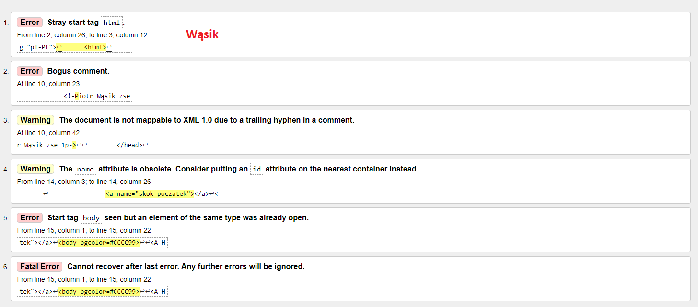

Co to jest walidator?
Walidator- program sprawdzający poprawność dokumentu o określonej składni.
Walidatory stały się na tyle popularną usługą,
że niektóre z nich ewoluowały w multiwalidatory przeprowadzające kilka wariantów walidacji jednocześnie.
Link do strony
